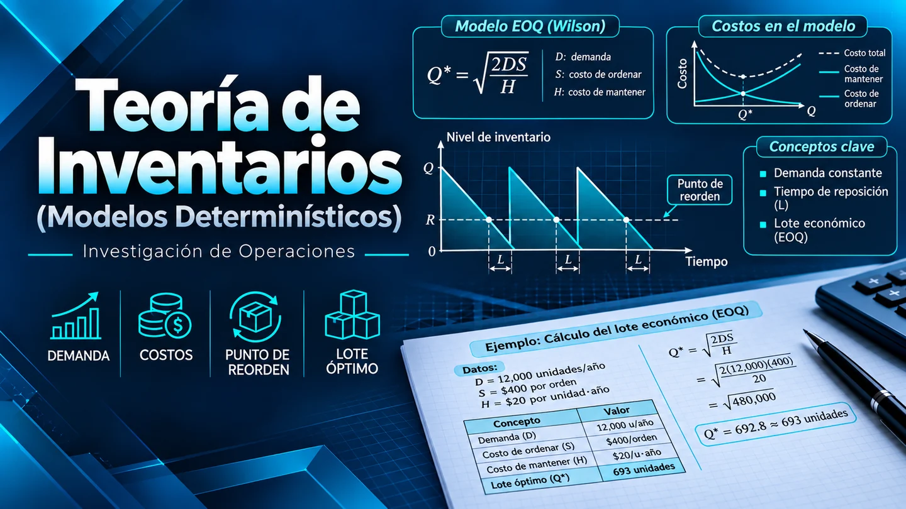

Módulo 3 · Investigación de Operaciones
Teoría de Inventarios (Modelos Determinísticos)
Cómo decidir cuánto pedir o producir y cuándo reponer las existencias.
Fundamentos
El costo de pedir y mantener inventario
Comprar lotes pequeños reduce el inventario promedio, pero obliga a ordenar con mayor frecuencia. Comprar lotes grandes reduce el número de pedidos, pero aumenta el costo de almacenamiento. Los modelos determinísticos buscan el equilibrio cuando la demanda, los costos y el plazo de entrega son conocidos.
Notación: D es la demanda anual; K, el costo por pedido o preparación; h, el costo anual de mantener una unidad; c, el precio unitario; Q, el tamaño del lote; y L, el tiempo de entrega. Las tasas y los tiempos deben usar unidades compatibles.
Modelo 1
Lote económico de pedido (EOQ)
El lote llega de una vez y se consume a ritmo constante, sin faltantes. Se hacen D/Q pedidos al año y el inventario promedio es Q/2. El lote óptimo iguala los costos anuales de ordenar y mantener.
Q* = √(2KD/h)
Punto de reorden = demanda diaria × plazo en días
Ejemplo de la ferretería: con D = 12 000 unidades, K = $100, c = $25 y una tasa de mantenimiento del 20 %, h = $5. El lote económico es de aproximadamente 693 unidades y el ciclo dura unos 21 días. Con un plazo de entrega de siete días y un año de 365 días, se vuelve a pedir al llegar a unas 230 unidades.
El costo variable anual en el óptimo es de $3 464,10. Pedir 900 unidades lo eleva a $3 583,33, aproximadamente un 3,4 %. La diferencia muestra por qué pequeños ajustes al lote pueden tener un efecto limitado en el costo.
Modelo 2
Lote económico de producción (EPQ)
La reposición es gradual. Mientras la planta produce a una tasa p mayor que D, el inventario crece a razón de p − D. Cuando termina el lote, el consumo reduce las existencias hasta cero.
Q* = √[2KD / (h(1 − D/p))]
Ejemplo de la planta: con D = 24 000, p = 60 000, K = $300 y h = $2, conviene producir unas 3 464 unidades por lote. El inventario máximo es de unas 2 078 unidades. Cada ciclo dura 52,7 días y se produce durante los primeros 21,1 días.
Modelo 3
EOQ con faltantes permitidos
Cuando los clientes aceptan esperar, se pueden acumular pedidos pendientes y cubrirlos al recibir el siguiente lote. π es el costo anual por unidad pendiente, S el inventario máximo y B el faltante máximo.
Q* = √[(2KD/h) × ((h + π)/π)]
S* = πQ*/(h + π) · B* = Q* − S*
Ejemplo de la ferretería: con los datos del EOQ y π = $20, el lote óptimo es de unas 775 unidades. El inventario máximo es de unas 620 unidades y pueden acumularse hasta 155 pendientes. El punto de reorden se ajusta a 230 − 155 ≈ 75 unidades. El costo variable baja a $3 098,39 al año, cerca de un 10,6 % menos que en el EOQ clásico.
Modelo 4
EOQ con descuentos por cantidad
Si el descuento aplica a todas las unidades del lote, se calcula el EOQ con el costo de mantenimiento de cada tramo. Si el EOQ cae fuera del rango, se evalúa el límite factible más cercano. Después se comparan los costos anuales incluyendo la compra, ya que el precio unitario varía.
Costo anual = cD + KD/Q + hQ/2
Ejemplo: con D = 20 000, K = $100 y una tasa del 20 %, se obtienen los siguientes candidatos por tramo:
| Tramo | Precio unitario | Lote evaluado | Costo anual |
|---|---|---|---|
| 1 a 999 | $10,00 | 999 | $203 001,00 |
| 1 000 a 2 499 | $9,50 | ≈ 1 451 | $192 756,81 |
| 2 500 o más | $9,00 | 2 500 | $183 050,00 |
Se hacen ocho pedidos al año. El costo total incluye $180 000 de compra, $800 de pedidos y $2 250 de almacenamiento.
Cómo elegir el modelo
Usa EOQ para compras sin faltantes ni descuentos; EPQ para producción gradual; EOQ con faltantes si se aceptan pedidos pendientes; y EOQ con descuentos si el precio depende de la cantidad comprada.
Videos explicativos
